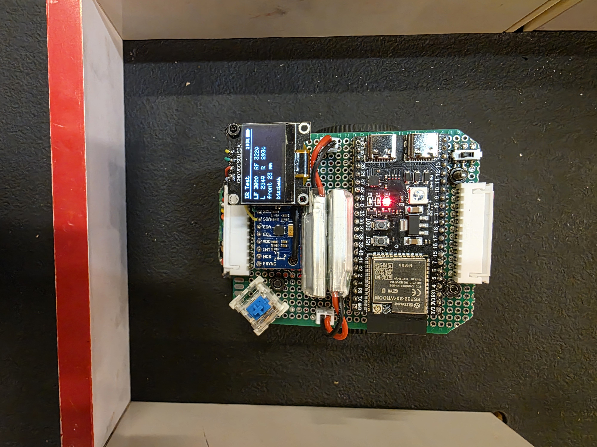
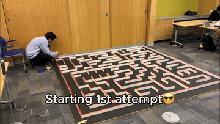
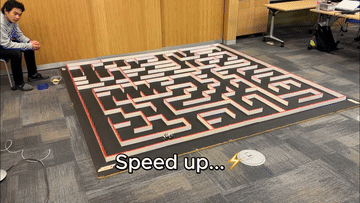

Plan
Flood-fill BFS explores a 16×16 maze and computes a route to the classical center goal.
3rd place overall · AAMC 2026
NeuroMouse26 is an award-winning open-source Micromouse robotics project built on the ESP32-S3. It autonomously explores and solves a 16×16 maze using flood-fill BFS, position-PID motion control, infrared wall sensing, and 4× quadrature encoder decoding; the robot placed 3rd overall at the 2026 All America Micromouse Contest at UCLA IEEE.

Competition proven
NeuroMouse26 mapped the full 16×16 competition maze, saved its wall map, and replayed an optimized route. The project is independent and is not affiliated with or endorsed by IEEE, UCLA, or the AAMC organizers.
Technical stack
Flood-fill BFS explores a 16×16 maze and computes a route to the classical center goal.
Four infrared channels detect front and side walls with ambient-subtracted readings.
Position-PID motion, IR centering, and MPU-6500 yaw feedback execute each phase.
ESP32-S3 PCNT hardware decodes magnetic quadrature encoders at 4× resolution.
See it move
The fast-run planner fuses consecutive straight cells into one trapezoidal motion profile, while the wall map persists in ESP32 nonvolatile storage between runs.


Open source
The firmware targets an ESP32-S3-WROOM using Arduino on PlatformIO. The reference chassis uses GA-N20 motors, a DRV8833 driver, magnetic encoders, four IR receivers, and an MPU-6500 IMU.
git clone https://github.com/enkhbold470/neuromouse26.git
cd neuromouse26
pio run -e main
pio run -e main -t upload
pio device monitorEngineering guides
The team